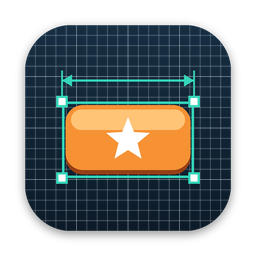

Mockfit
Drop in a mockup. Every sprite finds its spot.
Mockfit is a Mac app for game and app developers. Give it a flat UI mockup and the separate sprite images, and it finds where each sprite sits — position, size and scale, to the pixel. Check the result in Overlay and Difference views, turn text into real labels, set anchors for other screen sizes, then export a layout for SwiftUI, SpriteKit, Godot 4, Unity (uGUI) or plain JSON.
Getting started
- Create a new document (⌘N) and drag in your mockup and sprite images — the largest image becomes the mockup.
- Mockfit fits every layer automatically. Layers marked “to review” show why; use Place All Copies for sprites that appear more than once.
- Use Read Text (⌥⌘T) to turn text in the mockup into editable labels, and Suggest Anchors (⌃⌘A) for other screen sizes.
- Choose Export to save code and an asset catalog, or Copy Code.
No images yet? Open a new document and choose Try the Sample.
Free and Pro
- Free
- Every feature, unlimited JSON layout exports, and code exports for screens with up to 12 layers.
- Mockfit Pro — $1.99 per month
- Code exports for screens with any number of layers. Price may vary by country and is shown in the app before you subscribe.
Mockfit Pro is an auto-renewable subscription. Payment is charged to your Apple Account at confirmation of purchase. The subscription renews automatically each month unless it is cancelled at least 24 hours before the end of the current period, and your account is charged for renewal within 24 hours before the period ends. Manage or cancel it in the App Store app › your account › Subscriptions, or at apps.apple.com/account/subscriptions. To restore Pro on another Mac signed in with the same Apple Account, choose Mockfit › Restore Purchases.
Common questions
- A layer is “not found”.
- Check that the sprite really appears in the mockup at a similar size. Widen Smallest/Largest scale in the Inspector, or select an area and use Find in Area.
- The background looks stretched in Preview.
- A stretch anchor fills the screen and changes its shape on other aspect ratios. Use a Center anchor with art larger than the screen, or Scaled to Fit.
- Read Text is slow the first time.
- macOS prepares its on-device text recognition the first time it is used; this can take about a minute. After that it is fast.
- Does Mockfit upload my files?
- No. Everything runs on your Mac. See the Privacy Policy.